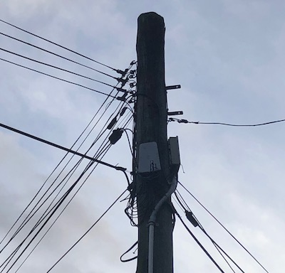

A Field Guide to Internet Infrastructure
By Ella Wight
Power lines are needed for everyday uses, we are surrounded by power lines constantly and rely on them for day to day communication. A power line is usually a cable above the ground which passes electrical power through wires to a city or homes. They can also be buried three feet underground.
CCTV stands for closed-circuit television; these devices are used for video surveillance which are used on busy streets and outside houses to protect the property from crimes. These cameras have become extremely popular in our day to day lives, the use of the cameras is to transmit a signal to an exact place, they are constantly sending the information to the connected networks.


Manholes are located below us, they are positioned underground and are normally found in urban areas, streets and sidewalks. The networks underground carry data and cables to and from city’s and homes. Manholes also include water, sewers, storm drains and gas.


Walking through Aro Valley, I found a large amount of Cables connected to powerlines. Cables are located further down the powerline poles, the cables carry high voltages to and from homes and cities, they also connect us to the internet.
Antennas have a lot of diverse uses, it is used for radios, Wifi and TVs. Though much of our internet is provided through powerlines and cables, antennas play a huge roll in numerous wireless networking.